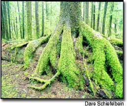
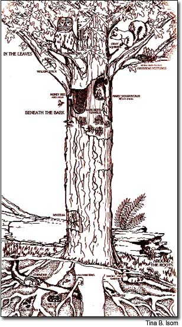
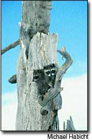

Young autumn’s shorter days and colder nights soon will do their work shutting down the chlorophyll factories in the woody landscape, and the skies will rain bright leaves. We humans will look up and watch admiringly even as we stand in our yards holding rakes in blistered hands, ever more leafy labor drifting to our feet.
Once shed of summer’s green and autumn’s multicolor, trees seem to us somber and lifeless. Nothing could be further from the truth - a leafless tree in fall and winter is near to popping with life, merely holding its vegetative breath. Nestled within its buds are thousands of miniature, fully formed infant leaves - all the foliage the tree will, at winter’s end, finally exhale in the great green gush we call spring.
That we see no life when we see no leaves is, in other words, only human foible. No tree, in fact, ever is lifeless - not even when the tree is long dead.
“Snag” is the traditional forestry word for a standing dead, or partially dead, tree. Recently, though, biologists have adopted a more descriptive and deserving term: wildlife tree.
With the exception of living plants, probably no other single component of the woodland environment supports more animal life. In North America, about 85 species of birds, at least 50 mammal species, and roughly a dozen reptiles and amphibians rely on snags for shelter, food, mating, resting, nesting and other critical functions. In addition, dozens of invertebrates - millipedes, beetles, spiders, worms, ants and more - also call snags “home” (or at least “snack bar”). In all, says the U.S. Forest Service, some 1,200 forms of fauna rely on dead, dying or rotted-hollow trees.
So much for the “dead wood” notion.
It’s the insects, naturally, that attract many of the higher creatures. Drawn largely by the easy pickings at snags, hungry insectivores help control insect pests in the forest overall.
But by far the greatest benefit of snags is the cavities - holes used for nests and shelter - that they foster. For many birds and animals, no better home exists than a hole in wood. Woodpeckers, chickadees, bluebirds, nuthatches, owls, wrens, tree swallows, raccoons, squirrels, bats, opossums, flying squirrels, porcupines - these are only a few of the species that require or prefer cavities. For them, a good snag is hole heaven.
Often, ironically, it is a cavity or the beginning of one that causes a snag-to-be’s demise. What sugar is to teeth, forest fungi are to wounded trees. Maybe it’s a lightning strike, a broken limb, a climbing bear’s dotted claw-scratch (ascending) or long-lined scrawl (descending).
Maybe it’s “Terry loves Laurel, 1972,” carved with passion if not thought into the smooth bark of a beech.
For whatever reason, the bark barrier is broken, the door is opened and the spores come marching in. Fungi commence snacking, first releasing enzymes that break down the cellulose and lignin (an organic substance that binds the cellulose fibers) in the cell walls, then slurping up the nutrients. Heart-rot fungi invade and weaken the cores of the trunk or limbs; sap rots attack sapwood, destroying vital tissues, then spreading to the interior.
Trees produce defenses against fungi, so sometimes the damage is limited, and the tree prevails. But often the invasion is ongoing and simply too much. Already weakened, the tree becomes fair game for other nutrient-seekers: mosses, slugs, more fungi and - most of all - insects. Quite literally, the tree’s life is sucked away.
Meanwhile, among the birds who come to feast on insects are the cavity-makers. Chickadees, diminutive in both body and beak, chip out nests in “soft” snags, those with weak, punky wood such as aspen and birch. Because these snags rot relatively quickly and attract insects in droves, they’re especially valuable as foraging trees.
Woodpeckers out-dig chickadees many times over, both in their ability to mine wood and in the number of cavities produced. Some 20 woodpecker species (including sapsuckers and flickers) breed in North America. All are equipped with chisellike beaks for drilling and extra-thick, shock-absorbing skulls to keep their brains from scrambling.
Though a woodpecker will peck wood wherever there are buggy meals, it prefers to carve nests or roosts in “hard” snags. These are trees that have heart rot and are essentially intact on the outside, but soft and easily excavated on the inside. The resulting hard-shelled cavities make snug retreats and are, like the snags themselves, long-lasting. Among good hard-snag trees are sugar maple, elm, hickory, butternut, beech and black oak.
A typical woodpecker carves, or at least starts, numerous cavities in a season. Some are drilled merely as a come-on, part of a male’s courtship ritual to attract a female. Other cavities are created only as roosts. And in late summer and early fall, when young woodpeckers raised in the nest disperse, a new flurry of hole-making reverberates in the forest.
Blessed be these cavity-makers, for they not only create and use cavities, but sooner or later move on, allowing others to move in. The shelter is critical to the survival of countless creatures. Indeed, even many who can build their own homes prefer the woodpeckers’ more commodious digs. You’ve seen those bulky, leafy gray squirrels’ nests in the treetops? They’re the hovels of squirreldom, a last-ditch make-do when suitable cavities cannot be found. Survival of young squirrels in a leaf nest is barely more than half that of cavity-housed squirrels. Even chickadees, given the choice of custom-carving their own cavity or claiming a used woodpecker’s, find it a no-brainer. It’s the woodpecker hole for sure.
So goes life in and around a “dead” tree. A red-tailed hawk perches atop the snag’s highest point, scanning for prey. A snake about to shed its skin - a process that leaves it vulnerable - slithers into a cavity, safe. A tiny brown creeper weaves a nest of moss and twigs beneath a slab of loosened bark. A barred owl hunkers in a high hole, an opossum and bat share another, all waiting for their night-day to begin.
Most snags stand, dead but full of life, for decades. Even when the tree finally topples, it continues to nurture life. At first, propped partially by its branch stubs, the log makes a fine lean-to den for porcupines, foxes and black bears. Gradually, as soil organisms and fungi soften the wood, the trunk sags to the ground. Salamanders and lizards take up residence, attracted by the log’s cool, moist environment, and the insects and worms that crawl around it. White-footed mice burrow into the punky wood. Squirrels cache nuts in the loosened fibers.
Over time, the decomposing log sinks ever lower into the soil, slowly releasing its store of nutrients. Emerald mosses cling where bark once ruled. The fallen tree becomes a “nurse log,” providing a rich growing medium. Tiny plants sprout and thrive on the log’s wet wood-earth surface. Among them, almost always: tree seedlings stretching for the sun.
Snags sometimes attract yet another sign of life, especially in autumn - snarling chain saws. Indeed, you might think a wood-burner could hardly ask for more: a trunk for splits, and limbs for stove wood, all air-dried on the stump. Often, though, snag wood is punky and of little heating value. The trees can be dangerous to fell, too, because of dead overhead limbs. Usually, there are better ways to stock a woodpile.
In any case, it makes sense before you cut firewood or timber to identify and, as much as possible, spare existing and future snags. Long-dead trees with their bony limbs are easy to spot. Snags-to-be require more detective work. Look for signs of disease or injury: bracket fungi, rotting branch stubs, beetles, carpenter ants or unhealed wounds.
Size is worth noting, too. The larger the snag, the more species can use it for shelter. Small birds and animals utilize snags as slender as 6 inches diameter at breast height (dbh). Large snags, however, accommodate both small and large creatures. Raccoons and opossums require snags at least 18 inches dbh; pileated woodpeckers, 20 inches.
Look also for “wolf trees,” which are big trees with large, widely spreading limbs susceptible to breakage at the trunk, which creates sizable cavities. Wolves are likely to be or become den trees, which are living trees with the trunk or a large limb hollowed out and with a hole leading to the outside. A den tree that’s 15 inches dbh or larger with an opening at least 4 inches wide is a tremendous asset to wildlife.
How many snags are enough? Recommendations vary, but a good rule of thumb is to maintain at least three “hard” and two “soft” snags per acre of woodland. More is always better. One agency suggests a half dozen or more 6- to 14-inch dbh snags and at least one 18-inch-plus dbh snag per acre.
A single snag in a small yard also is critical - in some ways, even more so than in woodlands. Though safety is obviously a factor, think twice before totally removing such a tree. If falling limbs are a concern, trim away the branches but leave the trunk, and if you want to “pretty up” the snag, plant a native vine around the base.
Across the road in our neighbor’s yard stands a particularly noble old snag - tall and craggy, only a few bark patches remaining, the bleached trunk peppered with cavities large and small.
Last fall I was out raking when a sudden gust rattled the treetops. As I glanced up, a flurry of leaves came swirling, floating around the old snag. Then came another gust, another flurry, and another. I stood there watching the leafy confetti from nearby trees tumble around the bare-boned skeleton, and wondered: Perhaps this is some sort of annual rite, an homage paid by living trees to The Old Ones.
I watched the celebration for a few seconds longer; then, shaking my head for having such a silly thought, turned back to my work.
Somehow, though, after that, the raking seemed much easir.
|
 DAVE SCHIEFELBEIN Tree roots grow around a fallen tree, or nurse log, in Olympic National Forest, in Washington state. |
 TINA B. ISOM Numerous fauna depend on parts of a snag, better termed “wildlife tree,” from the treetop to the roots. |
 MICHAEL HABICHT For raccoons,such as these in the Gallatin National Forest in Montana,a good snag is hole heaven. |